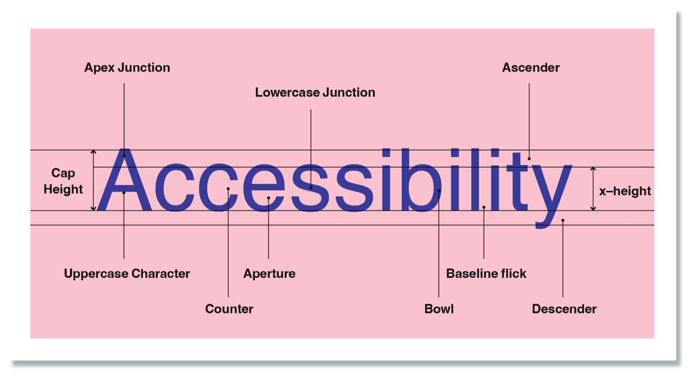
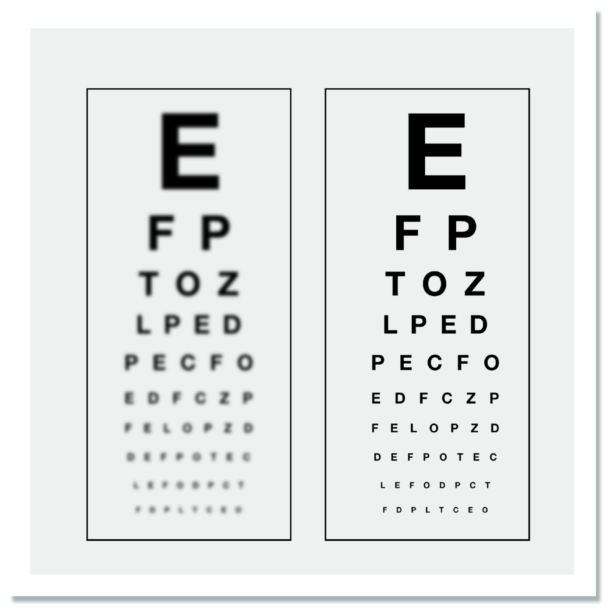
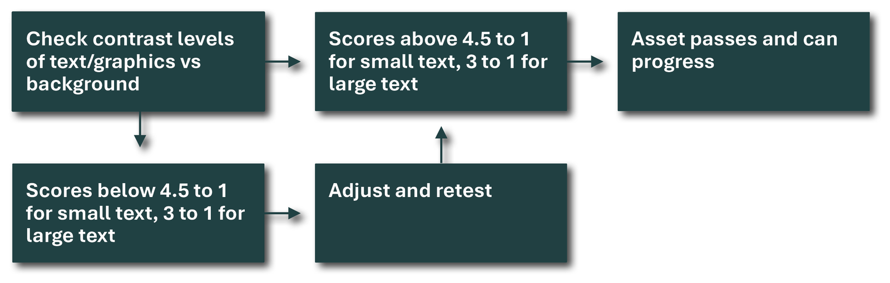

For eight years I taught drawing and painting to people who had never done it. Public classes of twenty-five to fifty, plus private students, adults and children — more than a thousand people in all, most of whom had not come to learn anything.
Beginners draw what they know instead of what they see. Ask for a hand and you get the symbol of a hand, because the head supplies an answer before the eye gets a turn. It is not a failure of effort or of talent. Recognition is faster than observation, and recognition wins.
You cannot fix that by explaining it. I explained it a thousand times, and I was good at explaining it. Every single person agreed with me — and then drew the symbol again thirty seconds later.
What works is a procedure that runs at the moment the decision gets made. Hold the pencil up. Measure the angle. Compare the width against the height. Not see better. Measure.
That is the whole of it. The teaching has to survive the moment when the learner is not thinking about the teaching, which is every moment that matters. If a lesson only works while someone is concentrating on the lesson, it is not a lesson. It is a conversation they enjoyed.
The room where I learned it
People expect this credential to be an atelier. It was mostly a paint-and-sip studio, and that is the part I would defend hardest.
In a serious atelier you can say observe more carefully and a committed student will go away and work at it for a month. In a room of forty people who came out for a night — a glass of wine, two hours, and a finished painting expected at the end — that sentence does nothing at all. The only thing that functions is a procedure that works without understanding, for someone who did not come to learn and will not practise afterwards.
That is a harder instructional problem than teaching people who already want it, not an easier one. It is also much closer to teaching something to the general public, which is why I stopped being embarrassed about it a long time ago.
Six times, four subjects
I have taught four unrelated things since. Every time, without ever planning it, I did the same thing: taught the idea, watched it fail to survive the room, and then changed the situation rather than the person.
189 slides and one line
In 2024 I co-authored my company's inclusive design standard: 189 slides teaching designers, packaging engineers and outside agencies how to make material legible to people whose vision, cognition, motor control or hearing does not match the designer's.
It adopts WCAG AA across the entire consumer journey — print, web, mobile, pack, point of sale. Contrast ratios of 4.5 : 1 for regular text below 18pt and small icons, 3 : 1 for bold text above 18pt and large icons. Named tooling rather than good intentions: the Bridge-PCA contrast calculator, and Clari-Fi, the University of Cambridge Inclusive Design Toolkit's calibrated Gaussian-blur test. Five evaluation factors — visual, auditory and haptic, cognitive, 3D motor, and photographic representation — each with its own designer checklist.


The part I am proudest of is none of that. It is one line near the end.
The Rule. All text and graphics in digital assets to meet WCAG AA standard. Final check on contrast levels carried out at QC stage for all digital assets. Inclusive Design standard, 2024 — slide 177

One hundred and eighty-nine slides are knowledge. That line is the only reason the knowledge survives contact with a Tuesday afternoon and a shipping deadline. It works on somebody who was never in the training, has not read the standard and does not care about it — which is the only test that counts, because the material was written for colleagues and outside agencies who would never sit in a room with me.
What I got wrong
The year before, I co-authored a design capability curriculum. It launched as required training inside the marketing organisation — a hundred-plus marketers who had not asked to be there. I delivered three of the sessions myself. It is now mandatory on the company's learning platform, where it still runs without me.
One of its modules teaches how to write a design brief. The training worked: the briefs got better.
But the questions kept coming — and here I did the exact thing I tell everyone else not to do. I assumed the fix was to teach it again, harder.
When we finally went and looked at the briefing process itself, the obstacle was not knowledge at all. People knew perfectly well what a good brief contained. They could not assemble the pieces without three days of asking around, so under deadline they shipped what they had. Missing information, not missing knowledge — and no amount of additional teaching was ever going to touch that. So we built a tool that closes the information gap instead.
I had been doing this by instinct since the drawing classes and had never once said it out loud. Writing it down is the only reason I noticed it was the same move every time.
A standard that reads itself
There is a moment about 165 slides into the accessibility deck where it stops and asks the reader: notice anything different? It then lists what had been changed about the training template itself — a larger, more legible typeface among them — to bring the material into line with the standard it was teaching.
I like that page more than almost anything else in the document. A standard that has not been applied to itself is a proposal.
What I teach now
These days it is AI: for a 115-person global product organisation, and — as my part of a divisional roadmap covering more than a thousand people — a learning track I am still building.
The most common question is not how do I write a better prompt. It is which tool am I supposed to use?, because there are three of them running at once and nobody has said. For a long time I tried to answer that question. The answer is not to answer it. Move the knowledge out of the tools and into a layer any of them can read, and the choice stops being a decision worth agonising over. I have now built that three times without noticing it was the same idea: once for myself, once for a team, once for an organisation.
And on some weekends it is bread, at a flour mill, in groups of four to six, adults and children — where we start with where the grain and the flour come from, and where you'll know when it feels right is the single most useless sentence you can say to someone who has never felt it right. So instead: the poke test, the windowpane, the temperature of the dough, and timing scaled to the warmth of the room.
Different flour. Same pencil, held up at arm's length.
Notice anything different?
This page is set to the standard it describes:
- All text meets or exceeds the WCAG AA contrast ratio against its background, in both light and dark appearance.
- Body text is 19px on a 1.62 line height, at a measure of roughly 65 characters — long enough to read, short enough to find the next line.
- Every image carries a description of what it demonstrates, not merely what it depicts.
- The page follows your system's light or dark setting rather than overriding it, and honours a reduced-motion preference.
- Structure is real headings in order, so it can be navigated by screen reader rather than by sight alone.